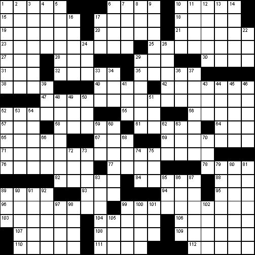

The completed grid is:

The asterisks in the answer grid represent the four suits of a tarot deck; the grid entries are:
which all clues the fact that the puzzle has to do with tarot cards (also "Dealing"; "major and minor"). The clues with asterisks are ambiguous and can be answered in more than one way by changing a single letter ("The stars predict change"; "some things, when they change, stay the same"):
Changing those answers, and reading the correspondingly changed across clues from top to bottom, you find TOWER, HERMIT, STAR, WORLD, POPE. If you take the associated number from each of those tarot cards, you get "16, 9, 17, 21, 5"; and then if you take the corresponding letters of the alphabet, you get the final answer, PIQUE.